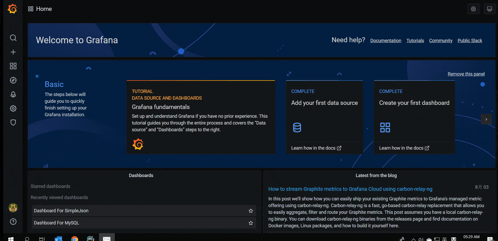

这里主要使用‘/’， ‘/query’， ‘/annotations’ 三个 API，api 使用 python flask 实现。
‘/query’， ‘/annotations’提供的是模拟数据。
Grafana 版本为 v7.1.1
from flask import Flask, request, jsonify, json | |
from flask_cors import CORS, cross_origin | |
import pandas as pd | |
app = Flask(__name__) | |
cors = CORS(app) | |
app.config['CORS_HEADERS'] = 'Content-Type' | |
@app.route('/', methods=['GET', 'POST']) | |
@cross_origin() | |
def index(): | |
"""Add to Data Source for save&test""" | |
print request.headers, request.get_json() | |
return 'Python Grafana data source, used for rendering HTML panels and timeseries data.' | |
@app.route('/query', methods=['GET', 'POST']) | |
@cross_origin(max_age=600) | |
def query_metrics(): | |
""" | |
Add 2 series by type 'timeserie', one line contains two points. | |
Add 1 series by type 'table', one line contains three points. | |
""" | |
req = request.get_json() | |
query_from = pd.Timestamp(req['range']['from']).to_pydatetime() | |
query_to = pd.Timestamp(req['range']['to']).to_pydatetime() | |
freq = str(req.get('intervalMs')) + 'ms' if 'intervalMs' in req else None | |
print('query from %s to %s.' % (query_from, query_to)) | |
print('query frequency interval is %s.' % freq) | |
results = [] | |
for targets in req['targets']: | |
ref_id, req_type = targets.get('refId'), targets.get('type') | |
print('ref id is %s. req type is %s.' % (ref_id, req_type)) | |
target_str = targets.get('target') | |
if target_str: | |
target_info = json.loads(target_str) | |
panel_id, panel_name = target_info['panelId'], target_info['panelName'] | |
print('panel id is %s. panel name is %s.' % (panel_id, panel_name)) | |
result = [] | |
if req_type == 'timeserie': | |
result = [ | |
{ | |
"target": "upper_75", | |
"datapoints": [ | |
[622, 1450754160000], # 2015-12-22 03:16:00 | |
[365, 1450754220000] # 2015-12-22 03:17:00 | |
]}, | |
{ | |
"target": "upper_90", | |
"datapoints": [ | |
[861, 1450754160000], # 2015-12-22 03:16:00 | |
[767, 1450754220000] # 2015-12-22 03:17:00 | |
] | |
} | |
] | |
if req_type == 'table': | |
result = [ | |
{ | |
"columns": [ | |
{"text": "Time", "type": "time"}, | |
{"text": "Country", "type": "string"}, | |
{"text": "Number", "type": "number"} | |
], | |
"rows": [ | |
[1450754160000, "SE", 123], # 2015-12-22 03:16:00 | |
[1450754200000, "DE", 331], # 2015-12-22 03:16:40 | |
[1450754220000, "US", 221] # 2015-12-22 03:17:00 | |
], | |
"type": "table" | |
} | |
] | |
results.extend(result) | |
return jsonify(results) | |
@app.route('/annotations', methods=['GET', 'POST']) | |
@cross_origin(max_age=600) | |
def query_annotations(): | |
"""Add annotation at 2015-12-22 03:17:00""" | |
req = request.get_json() | |
query_from = pd.Timestamp(req['range']['from']).to_pydatetime() | |
query_to = pd.Timestamp(req['range']['to']).to_pydatetime() | |
print('query from %s to %s.' % (query_from, query_to)) | |
annotation = req['annotation'] | |
query = annotation.get('query') | |
results = [{ | |
"annotation": query, # The original annotation sent from Grafana. | |
"time": 1450754200000, # Time since UNIX Epoch in milliseconds. (required), 2015-12-22 03:17:00 | |
"title": 'Title for annotation', # The title for the annotation tooltip. (required) | |
"tags": 'Tags for annotation', # Tags for the annotation. (optional) | |
"text": 'Text for annotation' # Text for the annotation. (optional) | |
}] | |
return jsonify(results) | |
@app.route('/search', methods=['GET', 'POST']) | |
@cross_origin() | |
def find_metrics(): | |
req = request.get_json() | |
query_from = pd.Timestamp(req['range']['from']).to_pydatetime() | |
query_to = pd.Timestamp(req['range']['to']).to_pydatetime() | |
print('query from %s to %s.' % (query_from, query_to)) | |
return jsonify([]) | |
@app.route('/panels', methods=['GET', 'POST']) | |
@cross_origin() | |
def get_panel(): | |
req = request.args | |
query_from = pd.Timestamp(req['range']['from']).to_pydatetime() | |
query_to = pd.Timestamp(req['range']['to']).to_pydatetime() | |
print('query from %s to %s.' % (query_from, query_to)) | |
query = req['query'] | |
print(query) | |
return jsonify([]) | |
if __name__ == '__main__': | |
app.run(host='0.0.0.0', port=5000, debug=True) |
效果演示：

参考：
https://www.jianshu.com/p/bbd507a68bb9
https://gist.github.com/linar-jether/95ff412f9d19fdf5e51293eb0c09b850
https://github.com/grafana/simple-json-datasource
https://grafana.com/grafana/plugins/grafana-simple-json-datasource